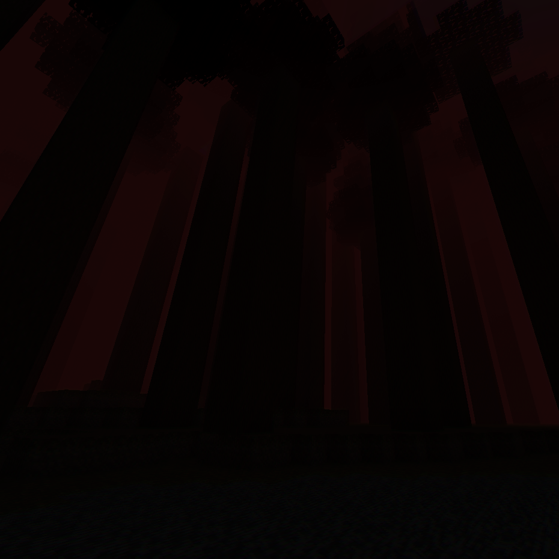
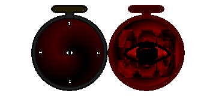
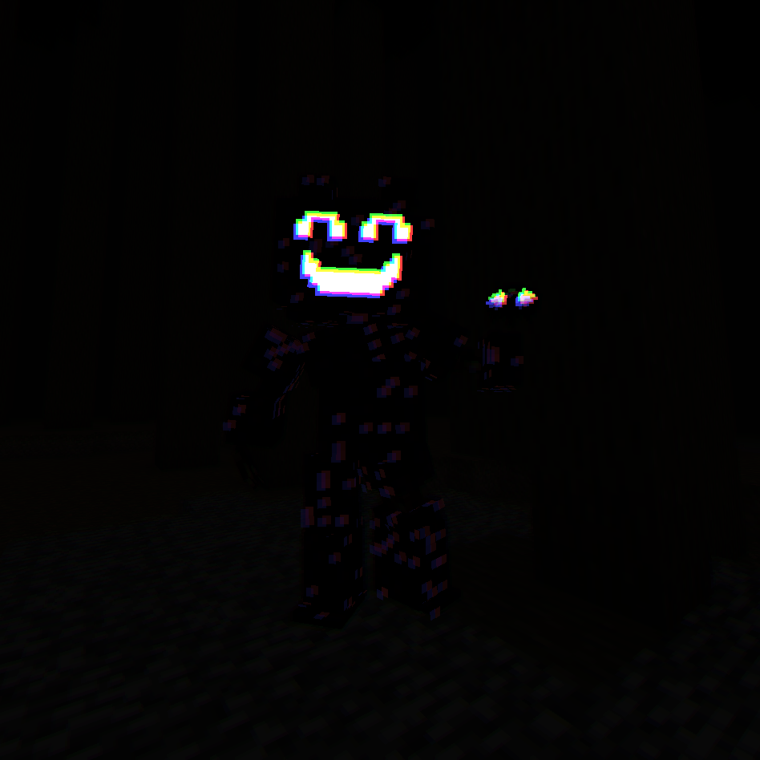
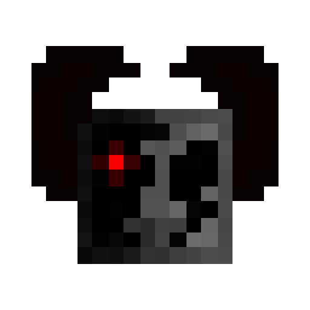

Error_3008 (THE SAMSIDE)

>> TEMPERATURE >NULL;
>> CLIMATE_DOWNFALL >NULL;
>> CIVILIZATION >NULL;
>> DANGER_LEVEL >NULL/NULL;
DESCRIPTION

The original myth about this area describes it as follows:
“An endless forest with trees that reach up to the clouds, a deep darkness accompanied by a dense fog that hides their real intentions, and a confusingly calming tranquility as it was desire for you to drop your guard and then turn back into the dust. Don’t be fooled by how it tries to replicate your reality, because hell itself would be even more merciful than this damned place. This is the home for anyone who knows too much, for the ones who know the truth. As one I’ve gazed at the void itself with my bare eyes, I can totally ensure that anyone who ends up there never returns. Once you’re inside, nothing works as intended; your instinct is in a constant battle against the logic itself; your fear is your alarm, and the calm is your final act. Don’t drop the guard; don’t let HIM see you vulnerable at all. Because once you’re calmed, death is imminent; once it happens, your cries will only be heard by the entities of insatiable hunger.”
ORIGIN
[NO INFORMATION AVAILABLE]
VEGETATION
Thanks to “broken_heaven,” we've learned that there is a flower known as “Voidglow” that confirms the existence of this place. Despite that, we don’t have enough proof about this place at all.
RESEARCH ADVANCES

A fulfilled, trusting clock / A broken clock
According to one of the prophecies surrounding this place,
“To anyone who enters this damned realm will have a peak hour on a pocket clock that would be given to them; their redemption for their mistake will be healed once it completes its function. One full turn before leaving, if any danger arises, your clock will let you die.”

Sinber with the WAY OUT
The prophecy reads as follows:
“There’s a way out if your actions bear the wrong fruit. Such actions not only set you free but also have consequences. Keep in mind that luck does not exist, especially when it comes to finding the eye that leads you to the surface.”
MUSIC
This track will play when "Sinber The Consequence" encounters you: |
This track will constantly play while being on "THE SAMSIDE" and is also the ambient loop of "Sinner Land": |
This track will play when HIM is approaching to punish you: |
This track will play when HIM becomes a real threat: |
This track will play when the world is being judged: |
KNOWN THREATS
SINBER THE CONSEQUENCE
He’s a nice dude who lives happily inside the “SAMSIDE.” He’s always waiting for someone to be his friend and give him a friendly eye to help him escape. :D
He’s very funny and friendly, and he really likes having friends around: visiting them, adding decorations to their rooms and houses, getting hugs from them… And all that kind of stuff that friends do… Well, I guess…
Anyway, he wants to be your friend and visit you and that type of stuff. L̴̼͠é̵̢̛̪̻̓t̴̝̪̹̾̈́͊ ̴̧͇̗̾͐͐m̷͕̞͖̈́́ȩ̸̟͚̓͘ ̴̙̬͎̒͠i̸̠̱̍̚͝n̷̩̖̠͋̊̄,̵͉̘͈̇ ̶̡͉̩͂͝P̶̫̦͚̽L̷̡̨̙̅͘Ḛ̶̦̾̃À̴̧̚S̶͉̅Ê̵̥͑͜͜ ̴̱͆L̸̼̀̀̈Ḙ̸͈̺͘T̵̝̏̕ ̶̥͛̒͝M̵̪̑́͑Ė̷̼͘ ̸̖̆̇̚Ḯ̸̞̳̞͝N̷̺̏̓͝ͅ ̴̛͖̆P̶̮͝L̶̜̑̔E̵͈͇̱̐À̵̹̕S̴̢̭̗̋̕È̶̡̹̜̈́̿!̶̙̲̺̿!̴̧̹̔̑͠!̸̇̍̽ͅ!̸̟͋̐!̶̜͍̺̈̕
H I M

This being is the most popular myth related to the “ERROR_3008 (THE SAMSIDE),” considered by many to be a source of hope and by others a judge, according to the prophecy: “THE VOID WALKER.”
A four-legged creature that seems to have total control over the legacy of the universe, a manipulator and destroyer. It has only one goal: to take with HIM anyone who has seen too much, and because of this, there’s no proof about its existence at all. For the moment, it’s all writings and theories without a solid proof; this is all we can say.
Honestly, for us, it’s a simple excuse to blame for all the corruption, just by categorizing it as the leader of a fictional land.